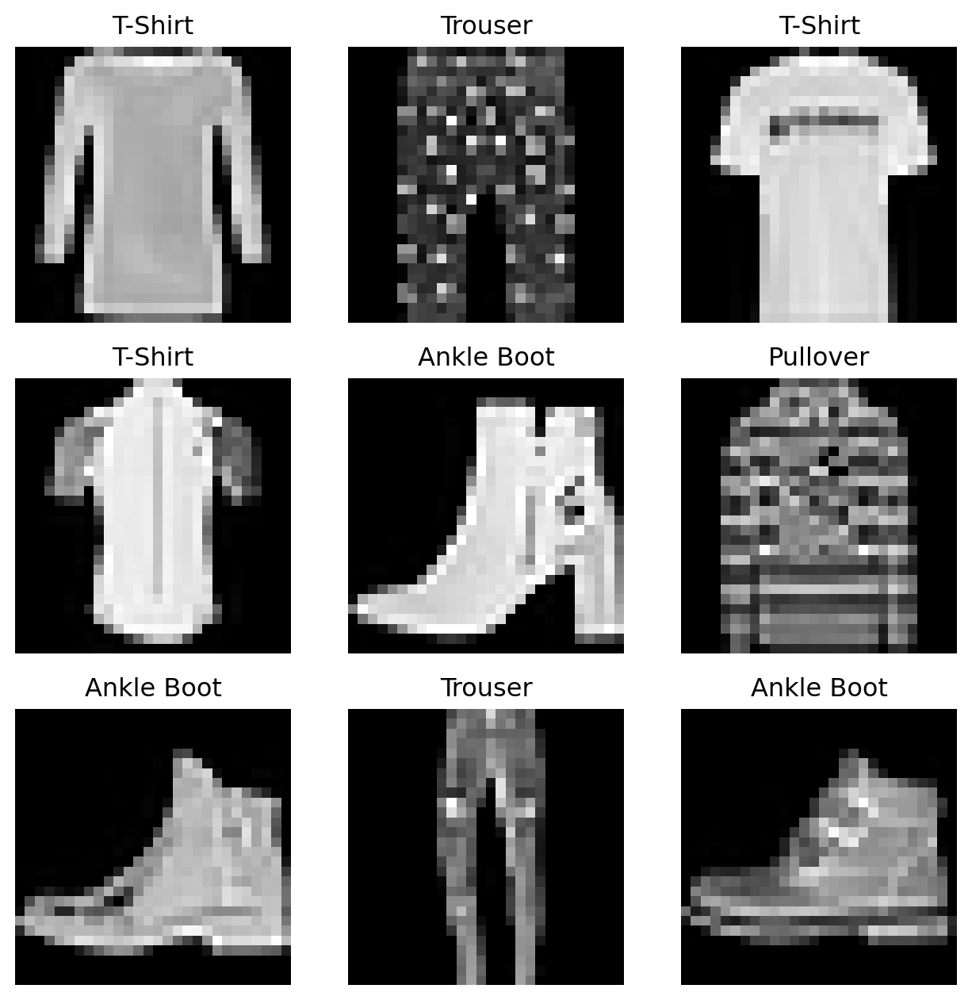
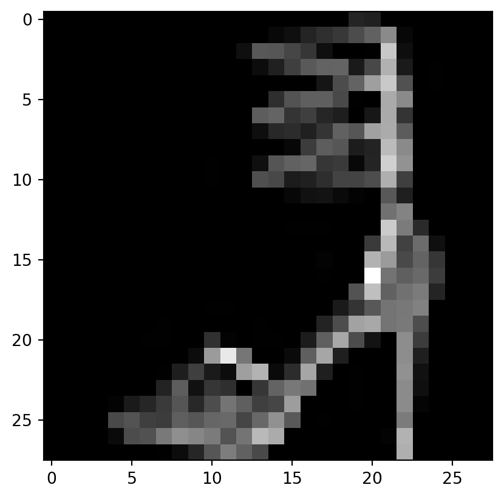

# Import required packages
import os
import pandas as pd
import matplotlib.pyplot as pltIn today’s blog post, we’ll go through the “Introduction to PyTorch” tutorial available from the PyTorch’s online learning community.
This tutorial is designed to walk through every component you would need to start developing models in PyTorch. With that, many of the elements show you how to complete certain steps in multiple ways… In this walkthrough, I will be selecting a subset of elements from these components and streamlining the steps of data processing and model training to showcase exactly how one would use these tools for an example dataset.
In a future blog post, I will take the foundation developed through this walkthrough and explore a modifiedd data analysis workflow, with a more complicated neural network and additional hyperparameter training for a different set of data.
With background out of the way, let’s get started~
```{r}
library(reticulate)
use_python('/opt/anaconda3/bin/python')
```Most machine learning workflows involve uploading data, creating models, optimizing model parameters, and performing predictions on input data. This tutorial introduces you to a complete ML workflow implemented in PyTorch.
In PyTorch, we use tensors to encode the inputs and outputs of a model, as well as the model’s parameters. Tensors are a specialized data structure that are very similar to arrays and matrices.
import torch
from torch import nn
from torch.utils.data import Dataset
from torch.utils.data import DataLoader#import torchvision
from torchvision import datasets, transforms
from torchvision.transforms import ToTensor, Lambda
from torchvision.io import read_imageWe start by checking to see if we can train our model on a hardware accelerator like the GPU or MPS if available. Otherwise, we’ll use the CPU.
# Get cpu, gpu or mps device for training.
device = (
"cuda"
if torch.cuda.is_available()
else "mps"
if torch.backends.mps.is_available()
else "cpu"
)
print(f"Using {device} device")Using mps deviceCode for processing data samples can get messy and hard to maintain. We ideally want our dataset code to be de-coupled from model training code for better readability and modularity. We will break our analysis into the following two sections: Data and Modeling.
Data
Importing and transforming the data
PyTorch offers domain-specific libraries such as TorchText, TorchVision, and TorchAudio. In this tutorial, we will be using a TorchVision dataset. The torchvision.datasets module contains Dataset objects for many real-world vision data. Here, we will use the FashionMNIST dataset. Fashion-MNIST is a dataset of images consisting of 60,000 training examples and 10,000 test examples. Each example includes a 28x28 grayscale image and an associated label from one of 10 classes.
Each PyTorch Dataset stores a set of samples and their corresponding labels. Data do not always come in the final processed form that is required for training ML algorithms. We use transforms to perform some manipulation of the data and make it suitable for training. Every TorchVision Dataset includes 2 arguments: transform to modify the samples and target_transform to modify the labels.
The FashionMNIST features are in PIL Image format. For training, we need the features as normalized tensors, and the labels as one-hot encoded tensors. To make this transformation, we use the ToTensor() function. ToTensor() converts a PIL image or NumPy ndarray into a FloatTensor and scales the image’s pixel intensity values in the range [0., 1.]
# Download training data from open datasets.
training_data = datasets.FashionMNIST(
root="data",
train=True,
download=True,
transform=ToTensor()
)
# Download test data from open datasets.
test_data = datasets.FashionMNIST(
root="data",
train=False,
download=True,
transform=ToTensor()
)We now have our data uploaded! We can index an input Dataset manually (i.e. training_data[index]) to get individual samples. Here, we use matplotlib to visualize some samples in our training data.
labels_map = {
0: "T-Shirt",
1: "Trouser",
2: "Pullover",
3: "Dress",
4: "Coat",
5: "Sandal",
6: "Shirt",
7: "Sneaker",
8: "Bag",
9: "Ankle Boot",
}
figure = plt.figure(figsize=(8, 8))
cols, rows = 3, 3
for i in range(1, cols * rows + 1):
sample_idx = torch.randint(len(training_data), size=(1,)).item()
img, label = training_data[sample_idx]
figure.add_subplot(rows, cols, i)
plt.title(labels_map[label])
plt.axis("off")
plt.imshow(img.squeeze(), cmap="gray")
plt.show()
Preparing data for training with DataLoaders
While training a model, we typically want to pass samples in “minibatches”, reshuffle the data at every epoch to reduce model overfitting, and use Pythonic multiprocessing to speed up data retrieval. DataLoader is an iterable that abstracts this complexity for us in an easy API. We pass our input Dataset as an argument to DataLoader. This wraps an iterable over our dataset, supporting automatic batching, sampling, shuffling, and multiprocess data loading in the process.
Here we define a batch size of 64 - each element in the DataLoader iterable will return a batch of 64 features and labels.
batch_size = 64
# Create data loaders.
train_dataloader = DataLoader(training_data, batch_size=batch_size, shuffle=True)
test_dataloader = DataLoader(test_data, batch_size=batch_size, shuffle=True)
for X, y in test_dataloader:
print(f"Shape of X [N, C, H, W]: {X.shape}")
print(f"Shape of y: {y.shape} {y.dtype}")
breakShape of X [N, C, H, W]: torch.Size([64, 1, 28, 28])
Shape of y: torch.Size([64]) torch.int64Iterating over the DataLoader
Now that we have loaded our data into a DataLoader, we can iterate through the dataset as needed (using next(iter(DataLoader)). Each iteration returns a batch of train_features and train_labels (containing batch_size=64 features and labels respectively). Because we specified shuffle=True, the data are shuffled after we iterate over all of our batches.
# Display image and label.
train_features, train_labels = next(iter(train_dataloader))
print(f"Feature batch shape: {train_features.size()}")
print(f"Labels batch shape: {train_labels.size()}")
img = train_features[0].squeeze()
label = train_labels[0]
plt.imshow(img, cmap="gray")
plt.show()
print(f"Label: {label}")Feature batch shape: torch.Size([64, 1, 28, 28])
Labels batch shape: torch.Size([64])
Label: 5
Modeling
Defining a neural network
Neural networks comprise of layers/modules that perform operations on data. The torch.nn namespace provides all the building blocks you need to build your own neural network. Every module in PyTorch subclasses the nn.Module. A neural network is a module itself that consists of other modules (layers). This nested structure allows for building and managing complex architectures easily.
To define a neural network in PyTorch, we create a class that inherits from nn.Module. We define the layers of the network in the __init__ function and specify how data will pass through the network in the forward function.
# Define model
class NeuralNetwork(nn.Module):
def __init__(self):
super().__init__()
self.flatten = nn.Flatten()
self.linear_relu_stack = nn.Sequential(
nn.Linear(28*28, 512),
nn.ReLU(),
nn.Linear(512, 512),
nn.ReLU(),
nn.Linear(512, 10)
)
def forward(self, x):
x = self.flatten(x)
logits = self.linear_relu_stack(x)
return logitsNow that we’ve defined the structure of our NeuralNetwork, we can create an instance of it and move it to a faster device (GPU or MPS) if available to accelerate operations. We can also print its structure to see the layers that we’ve just defined.
model = NeuralNetwork().to(device)
print(f"Model structure: {model}")Model structure: NeuralNetwork(
(flatten): Flatten(start_dim=1, end_dim=-1)
(linear_relu_stack): Sequential(
(0): Linear(in_features=784, out_features=512, bias=True)
(1): ReLU()
(2): Linear(in_features=512, out_features=512, bias=True)
(3): ReLU()
(4): Linear(in_features=512, out_features=10, bias=True)
)
)Many layers inside a neural network are parameterized, meaning that they have associated weights and biases that are optimized during training. Subclassing nn.Module automatically tracks all fields defined inside your model object, and makes all parameters accessible using your model’s parameters() or named_parameters() methods.
The linear layer is a module that applies a linear transformation on the input using its stored weights and biases. Non-linear activations are what create the complex mappings between the model’s inputs and outputs. They are applied after linear transformations to introduce nonlinearity, helping neural networks learn a wide variety of phenomena.
In this model, we use nn.ReLU between our linear layers, but there are other options for activations to introduce non-linearity in your model.
for name, param in model.named_parameters():
print(f"Layer: {name} | Size: {param.size()} | Values : {param[:2]} \n")Layer: linear_relu_stack.0.weight | Size: torch.Size([512, 784]) | Values : tensor([[ 0.0069, -0.0090, -0.0053, ..., 0.0014, -0.0055, -0.0313],
[-0.0027, -0.0257, -0.0303, ..., -0.0329, 0.0320, -0.0336]],
device='mps:0', grad_fn=<SliceBackward0>)
Layer: linear_relu_stack.0.bias | Size: torch.Size([512]) | Values : tensor([ 0.0255, -0.0069], device='mps:0', grad_fn=<SliceBackward0>)
Layer: linear_relu_stack.2.weight | Size: torch.Size([512, 512]) | Values : tensor([[ 0.0210, -0.0186, 0.0411, ..., 0.0346, 0.0432, -0.0231],
[-0.0199, 0.0335, -0.0396, ..., -0.0416, 0.0382, 0.0423]],
device='mps:0', grad_fn=<SliceBackward0>)
Layer: linear_relu_stack.2.bias | Size: torch.Size([512]) | Values : tensor([ 0.0328, -0.0148], device='mps:0', grad_fn=<SliceBackward0>)
Layer: linear_relu_stack.4.weight | Size: torch.Size([10, 512]) | Values : tensor([[ 0.0231, -0.0346, -0.0262, ..., -0.0030, -0.0107, 0.0297],
[ 0.0025, -0.0110, -0.0214, ..., 0.0298, -0.0307, 0.0295]],
device='mps:0', grad_fn=<SliceBackward0>)
Layer: linear_relu_stack.4.bias | Size: torch.Size([10]) | Values : tensor([-0.0358, 0.0367], device='mps:0', grad_fn=<SliceBackward0>)
Optimizing the Model Parameters
Now that we have our data and our model, it’s time to train, validate and test our model by optimizing its parameters on the input data! Training a model is an iterative process; in each iteration the model makes a guess about the output, calculates the error in its guess (loss), collects the derivatives of the error with respect to its parameters, and optimizes these parameters using gradient descent.
Hyperparameters
Hyperparameters are adjustable parameters that let you control the model optimization process. Different hyperparameter values can impact model training and convergence rates.
We define the following hyperparameters for training: - Number of Epochs - the number times to iterate over the dataset - Batch Size - the number of data samples propagated through the network before the parameters are updated - Learning Rate - how much to update models parameters at each batch/epoch. Smaller values yield slow learning speed, while large values may result in unpredictable behavior during training.
learning_rate = 1e-3
batch_size = 64
epochs = 5Optimization Loop
To train our model, we need a loss function as well as an optimizer.
Once we set our hyperparameters, we can then train and optimize our model with an optimization loop. Each iteration of the optimization loop is called an epoch.
Each epoch consists of two main parts: - The Train Loop - iterate over the training dataset and try to converge to optimal parameters. - The Validation/Test Loop - iterate over the test dataset to check if model performance is improving.
The loss function measures the degree of dissimilarity between an obtained result and the target value, and it is the loss function that we want to minimize during training. To calculate the loss we make a prediction using the inputs of our given data sample and compare it against the true data label value.
Common loss functions include nn.MSELoss (Mean Square Error) for regression tasks, and nn.NLLLoss (Negative Log Likelihood) for classification. nn.CrossEntropyLoss combines nn.LogSoftmax and nn.NLLLoss.
We pass our model’s output logits to nn.CrossEntropyLoss, which will normalize the logits and compute the prediction error.
# Initialize the loss function
loss_fn = nn.CrossEntropyLoss()Optimization is the process of adjusting model parameters to reduce model error in each training step. Optimization algorithms define how this process is performed (in this example we use Stochastic Gradient Descent). All optimization logic is encapsulated in the optimizer object. Here, we use the SGD optimizer; additionally, there are many different optimizers available in PyTorch such as ADAM and RMSProp, that work better for different kinds of models and data.
We initialize the optimizer by registering the model’s parameters that need to be trained, and passing in the learning rate hyperparameter.
optimizer = torch.optim.SGD(model.parameters(), lr=learning_rate)Inside the training loop, optimization happens in three steps: - Call optimizer.zero_grad() to reset the gradients of model parameters. Gradients by default add up; to prevent double-counting, we explicitly zero them at each iteration. - Backpropagate the prediction loss with a call to loss.backward(). PyTorch deposits the gradients of the loss w.r.t. each parameter. - Once we have our gradients, we call optimizer.step() to adjust the parameters by the gradients collected in the backward pass.
Full Implementation
We define train_loop that loops over our optimization code, and test_loop that evaluates the model’s performance against our test data.
def train_loop(dataloader, model, loss_fn, optimizer):
size = len(dataloader.dataset)
# Set the model to training mode - important for batch normalization and dropout layers
# Unnecessary in this situation but added for best practices
model.train()
for batch, (X, y) in enumerate(dataloader):
X = X.to(device)
y = y.to(device)
# Compute prediction and loss
pred = model(X)
loss = loss_fn(pred, y)
# Backpropagation
loss.backward()
optimizer.step()
optimizer.zero_grad()
if batch % 100 == 0:
loss, current = loss.item(), batch * batch_size + len(X)
print(f"loss: {loss:>7f} [{current:>5d}/{size:>5d}]")
def test_loop(dataloader, model, loss_fn):
# Set the model to evaluation mode - important for batch normalization and dropout layers
# Unnecessary in this situation but added for best practices
model.eval()
size = len(dataloader.dataset)
num_batches = len(dataloader)
test_loss, correct = 0, 0
# Evaluating the model with torch.no_grad() ensures that no gradients are computed during test mode
# also serves to reduce unnecessary gradient computations and memory usage for tensors with requires_grad=True
with torch.no_grad():
for X, y in dataloader:
X = X.to(device)
y = y.to(device)
pred = model(X)
test_loss += loss_fn(pred, y).item()
correct += (pred.argmax(1) == y).type(torch.float).sum().item()
test_loss /= num_batches
correct /= size
print(f"Test Error: \n Accuracy: {(100*correct):>0.1f}%, Avg loss: {test_loss:>8f} \n")In a single training loop, the model makes predictions on the training dataset (fed to it in batches), and then backpropagates the prediction error to adjust the model’s parameters.
We can also check the model’s performance against the test dataset to ensure it is learning.
The training process is conducted over several iterations (epochs). During each epoch, the model learns parameters to make better predictions. We print the model’s accuracy and loss at each epoch; we’d like to see the accuracy increase and the loss decrease with every epoch.
for t in range(epochs):
print(f"Epoch {t+1}\n-------------------------------")
train_loop(train_dataloader, model, loss_fn, optimizer)
test_loop(test_dataloader, model, loss_fn)
print("Done!")Epoch 1
-------------------------------
loss: 2.296714 [ 64/60000]
loss: 2.285919 [ 6464/60000]
loss: 2.289640 [12864/60000]
loss: 2.269527 [19264/60000]
loss: 2.238294 [25664/60000]
loss: 2.245018 [32064/60000]
loss: 2.233091 [38464/60000]
loss: 2.209641 [44864/60000]
loss: 2.167873 [51264/60000]
loss: 2.210138 [57664/60000]
Test Error:
Accuracy: 45.4%, Avg loss: 2.163287
Epoch 2
-------------------------------
loss: 2.148807 [ 64/60000]
loss: 2.146786 [ 6464/60000]
loss: 2.100028 [12864/60000]
loss: 2.086866 [19264/60000]
loss: 2.088841 [25664/60000]
loss: 2.022998 [32064/60000]
loss: 2.008321 [38464/60000]
loss: 1.980193 [44864/60000]
loss: 1.942847 [51264/60000]
loss: 1.935418 [57664/60000]
Test Error:
Accuracy: 47.7%, Avg loss: 1.898360
Epoch 3
-------------------------------
loss: 1.934336 [ 64/60000]
loss: 1.874416 [ 6464/60000]
loss: 1.709932 [12864/60000]
loss: 1.756551 [19264/60000]
loss: 1.738622 [25664/60000]
loss: 1.706300 [32064/60000]
loss: 1.609682 [38464/60000]
loss: 1.628336 [44864/60000]
loss: 1.539030 [51264/60000]
loss: 1.561772 [57664/60000]
Test Error:
Accuracy: 59.2%, Avg loss: 1.528465
Epoch 4
-------------------------------
loss: 1.439419 [ 64/60000]
loss: 1.322930 [ 6464/60000]
loss: 1.461314 [12864/60000]
loss: 1.465872 [19264/60000]
loss: 1.336003 [25664/60000]
loss: 1.346315 [32064/60000]
loss: 1.377878 [38464/60000]
loss: 1.287794 [44864/60000]
loss: 1.289096 [51264/60000]
loss: 1.287725 [57664/60000]
Test Error:
Accuracy: 62.3%, Avg loss: 1.254067
Epoch 5
-------------------------------
loss: 1.233157 [ 64/60000]
loss: 1.233771 [ 6464/60000]
loss: 1.178213 [12864/60000]
loss: 1.106026 [19264/60000]
loss: 1.188458 [25664/60000]
loss: 1.199469 [32064/60000]
loss: 1.154457 [38464/60000]
loss: 1.008805 [44864/60000]
loss: 1.108838 [51264/60000]
loss: 1.131137 [57664/60000]
Test Error:
Accuracy: 64.1%, Avg loss: 1.088662
Done!We can now use this model to make individual predictions.
To use the model, we pass it the input data. This executes the model’s forward, along with some background operations. Note that we do not call model.forward() directly!
classes = [
"T-shirt/top",
"Trouser",
"Pullover",
"Dress",
"Coat",
"Sandal",
"Shirt",
"Sneaker",
"Bag",
"Ankle boot",
]
model.eval()
x, y = test_data[0][0], test_data[0][1]
with torch.no_grad():
x = x.to(device)
pred = model(x)
predicted, actual = classes[pred[0].argmax(0)], classes[y]
print(f'Predicted: "{predicted}", Actual: "{actual}"')Predicted: "Ankle boot", Actual: "Ankle boot"Summary
This concludes my walkthrough of using basic PyTorch to process data and train a neural network. As mentioned, in a future post in the coming weeks, I will iterate on this pipeline, demonstrating a different neural network architecture and more data exploration for a different dataset. Until next time, [VS]Coders!